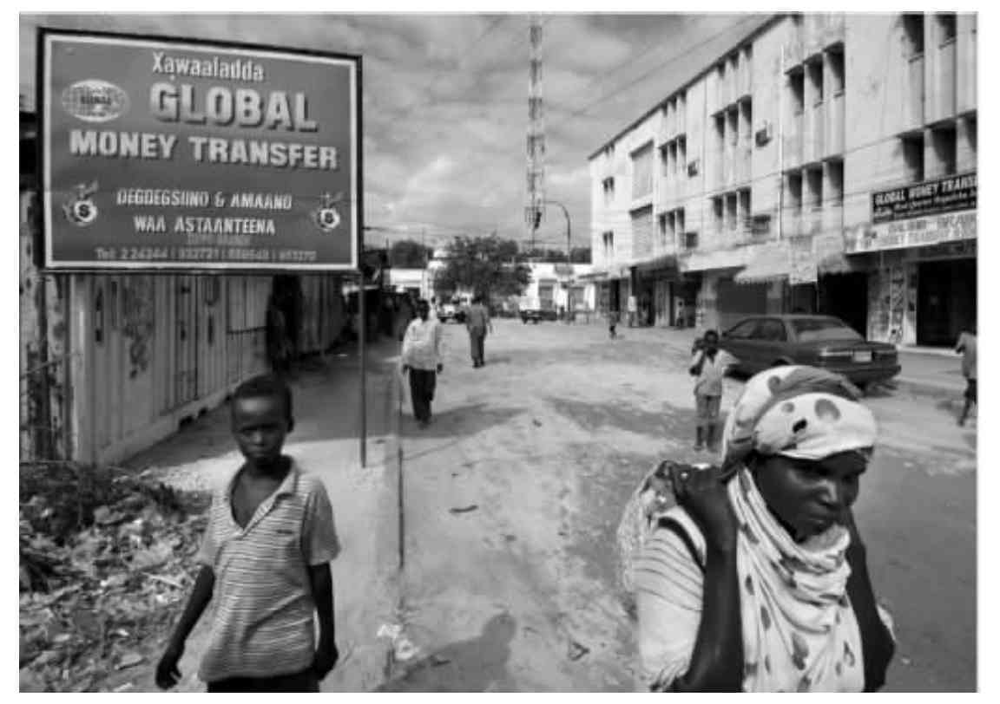
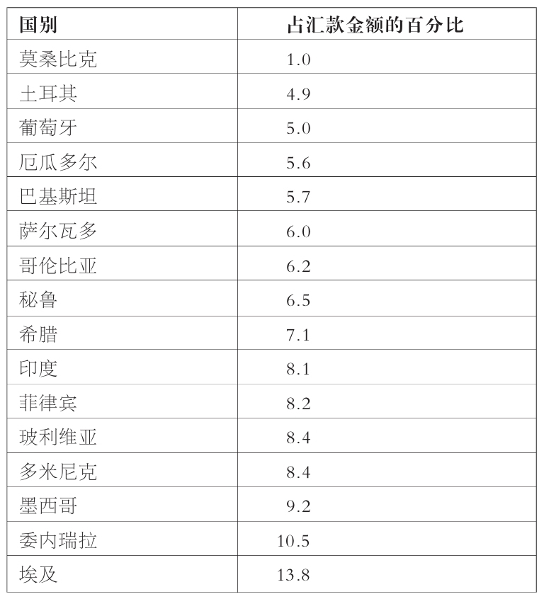

国际移民与发展问题的关联主要有两个方面。前一章讨论了一个方面，即发展的不均衡是如何成为移民的动机之一的。本章将考虑这一关系的反面，提出国际移民是如何影响来源国的发展这个问题。从积极的一面来看，移民向本土寄回大量的资金，同时也在国外对本国作出了其他方面的贡献，重返故土时他们又带回了新的技术、经验以及人脉。从消极的一面来看，正如第一章就说到的那样，移民会使国家本就不足的技术以“人才流失”的形式变得更为匮乏。
汇款
汇款一词通常是指海外移民寄回家乡的钱。几乎一切与移民相关的事情都很难准确量化，希望到现在读者诸君对这一点已经很清楚了，汇款当然也不例外。尽管有一部分钱是通过银行系统寄回，因此能够有案可查，但有可能更多的钱是通过非正式渠道寄回的。一个原因就是银行和代理通常收费较高（表4.1）。非正式汇款的一些渠道包括，移民本人探亲时带现金回家或者由其亲戚朋友代他们捎钱回家。有时一些定期往返于两地之间的商人会收取少量佣金替移民带钱回家——在古巴就是如此，这种商人被称为“募赖斯（mulas）”。也许最精密的非正式的转账机制要数索马里的“哈维拉德（hawilaad）”系统。关键是这些非正式转账的规模让人无从知晓。此外，由于银行往往不愿或者无法公布个人转账的详细情况，就连正式转账也并不总能准确定量。
尽管有这些数据方面的问题，世界银行还是就全球范围的汇款情况提供了年度估算。据世界银行估算，2004年移民寄回家的钱约有一千五百亿美元，而预测显示2005年这个数字将接近二千亿美元。这的确是数目惊人。这些数字之所以惊人也是因为它们代表了仅仅五年内汇款流量百分之五十的增长——全球化的影响是其主要原因。根据有些分析家的观点，就总值而言，正式汇款紧随石油之后，已经在全球所有合法商品（自然不包括大麻）的转移中位居第二。在发展中国家，移民汇款继企业投资之后成为最重要的外来资金，这些汇款几乎是通过发展援助和慈善事业所得捐献价值的三倍。此外有估计认为，非正式汇款的规模有可能是正式汇款的两倍。如果真是这样，那么每年的汇款总额可能会多达四千五百亿美元。

图5 宣传索马里摩加迪沙一家国际资金转账公司的广告牌
表4.1 2004年从美国汇款到某些国家所收取的平均费用

“哈维拉德”系统
2004年汇款接收国排名前三的是墨西哥（一百六十亿美元）、印度（九十九亿美元）和菲律宾（八十五亿美元）。不过，汇款作为GDP的一部分，比例最高的是在一些小国：约旦百分之二十三、莱索托百分之二十七、汤加百分之三十七。值得注意的是，与其他发展中地区相比，撒哈拉沙漠以南的非洲接收汇款的水平最低，只有全球总量的百分之一点五。2004年排名前三的汇款输出国有美国（二百八十亿美元）、沙特阿拉伯（一百五十亿美元）以及比利时、德国还有瑞士（各有八十亿美元）。
关于汇款对移民来源国的影响仍颇有争议。显然，直接接收汇款的人能够受益，他们往往是社会中最贫穷的人。汇款可以让人们摆脱贫困：以索马里兰地区为例，据估计，平均家庭收入因汇款而翻倍；在莱索托，汇款占农村家庭收入的比例高达百分之八十。汇款不仅使收入增加也使收入多样化了，也就是说家庭花销对单一收入来源的依赖变小了。这样一来，汇款也就提供了一种抵御风险的保障。此外，这些汇款通常都是用于子女教育和老人的医疗保健。
汇款、全球化及“3T”
直系亲属之外的人也可受惠于汇款，但到底能到什么程度则主要是看这笔钱如何使用。比如，要是用于做些小生意或者投资社区事业，如打井、建校、开诊所，那么这些汇款除了使直接拿到汇款的人受惠之外，也为其他人提供了就业机会和服务。另外一方面，如果这些汇款像惯常那样用于购买消费品，如汽车和电视机，或者用来还债，其益处就大打折扣了。另外，有些家庭有汇款可收，有些则没有，在这些地方邻里间的差距可能就会加大，社区的根基也会被削弱。同时也不应该忘记，移民往往来自来源国的几个特定区域，这就意味着他们的汇款也会增加地区间的不均衡。也有一些证据显示，这些汇款可能会付给蛇头来帮助移民的家庭成员以非常规的方式奔赴富国。
汇款近来已经吸引了大量的正面报道，不光是在媒体方面，在学界和政界也是如此，但是也应该敲敲警钟。首先，由于移民与家人分离，有时一走就是很长时间，他们的家人会面临不少困难，而这种困难并未得到足够的关注。寄钱回家并不能完全弥补无法与配偶厮守、守护孩子成长或是照顾老人的遗憾。
其次，移民寄钱回家所承受的社会压力也不可低估。移民有可能会失业、工作没保障或者工资很低，而家人却往往期望他们能寄大钱回来。有意思的是，调查显示，之所以出现这种情况，往往是因为移民在其从业和收入等方面误导了家人。如果你的父母为了让你去得起巴黎而变卖了家产，那么你想要让他们相信你住的是不错的套间、干的是有意思的工作而不是跟六个人合住一间房、干着扫大街的活儿甚或做了妓女，这也是可以理解的。
最后，接收汇款还会在来源国产生一种“移民文化”，年轻人由此看到了移民明显的回报，对移民海外寄予了不现实的期望。依赖汇款也会使有些留在国内的人完全失去工作的动力。
近些年从学术文献中而来的一个特别有意思的想法叫作“社会性汇款”，这跟佩吉·莱维特的调查关系尤为密切。它说的是人们不光是寄钱回家，还传递着新的思想、社会和文化习惯以及行为规范。它可以发生在家庭层面，比如在外工作的父亲或者母亲休假回家会给孩子教一些新的观念。这种情况也可以更为正式，如移民向来源国的媒体投稿。不过，当今最强有力的方式也许是通过互联网。尽管在第三章我们看到许多穷国使用互联网的便利还非常有限，但在这些国家诸如政客和记者之类的舆论制造者却经常使用互联网，因此会受到电子邮件活动或互联网聊天室讨论的影响。
汇款的压力
流散人口
来自某一城市、地区或国家，在同一目的地国一起生活的大量移民通常会形成正式的组织。这些组织的形式多种多样，包括专业协会——比如将来自同一来源国、移民在外的医生、律师或教师拢到一起——也包括一些以共同兴趣，如运动、宗教、性别、慈善及发展等为基础的组织。另有一种组织叫作“老乡会（HTA）”，这种组织使来自同一城镇的人聚在一起，其活动的核心是促进家乡发展。正如第二章所提到的那样，流散这个“无所不包”的词经常被用来描述这些形形色色的移民组织。
老乡会
这些流散组织一般会向其成员募捐并将所得财物送回来源国用于特定目的。正如募捐箱上标明的，募捐的目的可以是为了持续发展，也可以是为了紧急援助。比如，在应对2005年巴基斯坦北部地震时，流散组织迅速集中起来往本国送去钱、医疗设备、帐篷和食物。
除了通过送钱送物来作出经济方面的贡献之外，流散组织也可以参与祖国和家乡的政治、社会及文化事务，其最明显的政治贡献就是通过投票在国外参与本国的全国性（有时是地方性）选举。在2000年美国极为势均力敌的大选中，乔治·W.布什最终险胜阿尔·戈尔，有些州的结果之所以扭转靠的就是居于海外的美国公民。据估计，厄立特里亚1993年独立公投时，百分之九十八的移民海外、有投票权的厄立特里亚人都参与了公投。在参政方式上，厄立特里亚人的流散组织也提供了一些可资参考的做法。比如，独立之后，厄立特里亚流散组织的代表被正式纳入负责起草国家宪法的委员会之中。
虽然流散组织对社会和文化生活的贡献更难衡量，但其影响却同等重要。索马里兰地区堪称范例。索马里流散组织支付了哈尔格萨大学和博拉马的阿姆德大学的大部分建设费用。另外，海外的索马里学界人士还在定期返乡休假时到大学授课并培养年轻的索马里大学教师。随着技术不断创新，流散组织成员不用亲身回国也可以照样作贡献，比如通过互联网培训计划以及电视会议。有时候这被称为“虚拟返乡”。
全球越来越多的国家开始意识到流散组织的潜在贡献并正在努力动员流散人口进一步多作贡献。这种情况也可以以很正式的方式进行——墨西哥有专门负责与海外墨西哥人关系的内阁部长；也可以不那么正式，比如通过派遣代表向不同目的地国的流散组织做宣传。
正如对汇款问题应当有所保留，对流散组织的潜在贡献也应如此。原因之一就是，流散人口固然可以为发展添砖加瓦，但也可能为战争火上浇油。埃塞俄比亚人和厄立特里亚人的流散组织的确为两国之间的冲突提供了资金来源。另外，流散组织经常是由某个宗教或民族团体把持，因此所捐献的财物往往用于特定群体，从而加剧了不均衡的状况。与此相关的一点是，流散组织通常由受过教育的精英构成，这从他们的捐献情况就可以看得出来。比如说，创建大学可能就无法使穷苦的农民直接受益。
返乡
除了汇款回家及发动流散组织集体捐献，移民还有第三种途径可以潜在地促进发展，这就是返乡。移民返乡时从国外带回积蓄在家乡投资，常常会开办一些小企业。返乡之后，他们在国外仍有很好的关系网作为小规模贸易和进出口业务的基础。前面已经提到过，移民返乡也会将能够催生创业精神、促进创业活动的新观念带回乡里。
还是得提醒一下，返乡的影响也不可夸大。有些人返乡只不过是因为在外面干得不成功——回到家来既无积蓄又没新的经验，只能重操旧业。在外耗去了年轻能干的岁月，移民们重返故土多是为了休养。尽管他们回家时会带着积蓄带着经验，但返乡时自身在经济方面却并不活跃。另外移民返乡的影响究竟能到什么程度取决于国内的状况。假如无法获得土地，赋税又太高，有技术的劳动力还不足，好心好意想要开办小企业的返乡移民很容易会因此受挫，他们的计划也便随之破灭。
第一章和第二章曾经提到过，有些移民返乡待一小段时间然后又离家去继续他的移民生涯，似乎这种“循环移民”势头见长。在这种短期返乡的行为是否也能有助发展的问题上有一些争议，尤其是在决策层。对海湾国家的印度移民所作的有限调查表明，他们的探亲活动的确能够直接促进当地的经济发展。原因之一就是，短期返乡的移民往往会炫耀（他们在朋友和家人身上大把花钱，还会有些颇为招摇的消费）、购买礼物以及吃吃喝喝。
人才流失
如果国内失业问题严重，出境移民便因为减少了活少人多造成的竞争压力而具有积极意义。这就是菲律宾政府积极鼓励出境移民的一个原因。另外一个原因，当然了，是因为他们会寄钱回家。
然而，移民也是有倾向性的，出去的往往是社会中那些最具创业精神、受教育程度最高又最聪明的人。如果他们的技术在本国并不匮乏，这倒也不成问题。比方说在印度，即便大量的电脑专家和技术工人出境也不足为患，因为现在印度的很多年轻人都有这些技术。更常见的是，这种流动使本就缺乏这些技术的国家雪上加霜。这种过程通常被称作“人才流失”。除了丧失技术，人才流失还意味着这类国家将看不到在教育和培训国民上所作投资的任何回报。
人才流失是一个全球现象。有些忧虑多年以来一直未得到缓解，比如欧洲最优秀的科学家仍在奔赴北美，那里的工资更高，研究经费更宽裕，设备也更先进。
不过，这一过程在一些比较贫穷的国家已经引起了相当关注。从撒哈拉沙漠以南的非洲诸国移民的医疗人员，也就是医生和护士，尤其成为关注的焦点。有些数字令人震惊。比如，自2000年起，仅在英国一国注册工作的、来自撒哈拉沙漠以南非洲的护士就有将近一万六千名。赞比亚独立以来接受过培训的医生中，六百人里只有五十人仍留在当地行医。据估计，当前在英国曼彻斯特市工作的马拉维医生的人数超过马拉维全国的医生总数。回顾一下上一章提供的一些数据——那些穷国在婴儿死亡率和患病率方面的数据——才能理解为什么医生的缺位会对这些国家的发展有如此的负面影响。
尽管对于非洲师资方面的关注程度不及上述问题，但这方面人才流失的忧虑也同样值得一提。需要再次提到的是，上一章就入学率和文盲情况的评述可以说明这个问题何以如此令人担忧。
对于人才流失的反应各不相同。可以说，人才流失反映了人们背井离乡，以求改善生活并发挥自己的潜力，这并没有什么错。此外，如果他们自己的国家无法保证充分就业，无法提供工作机会和留守本国的鼓励措施，那就是那些国家自身的问题了。另外一方面，富裕的技术移民接收国也受到了批评，特别是那些积极招募技术人才的富国。有些国家被指责搜罗全球，像摘樱桃一样使那些最优秀的人才尽入彀中，而对其他人则置之不理。有些评论家认为，富国应当针对穷国技术人员的流失对其加以补偿。选择之一就是采取更加合乎道德准则的招募方式，避免从那些本来技术就特别不足的行业及国家选取人员。正如我在第八章要讲到的，长远看来，移民定期在外工作一段时间后返回来源国的暂时性移民计划不失为更具持续性的应对挑战之策。